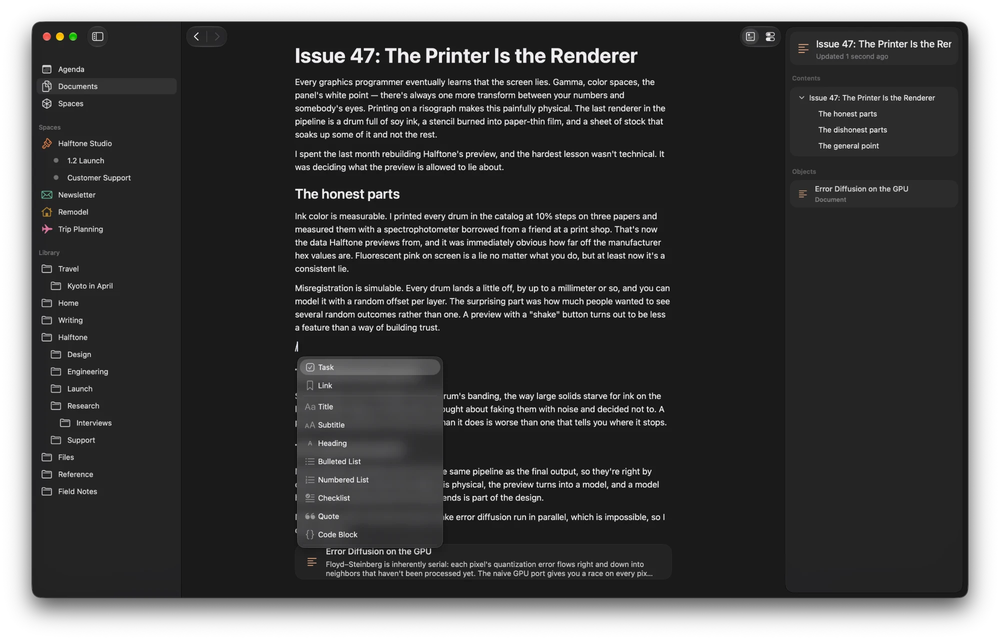
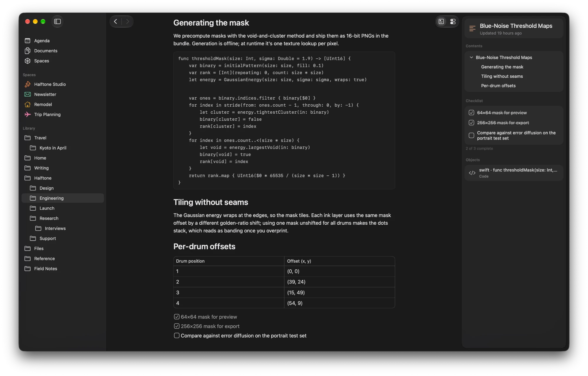
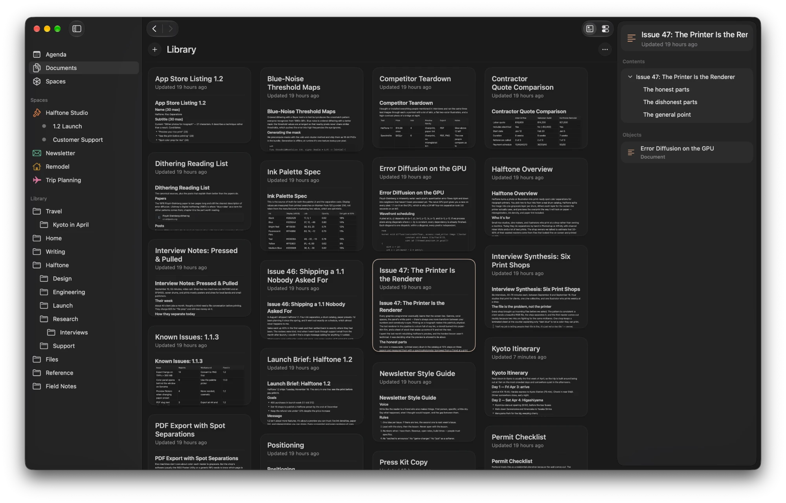
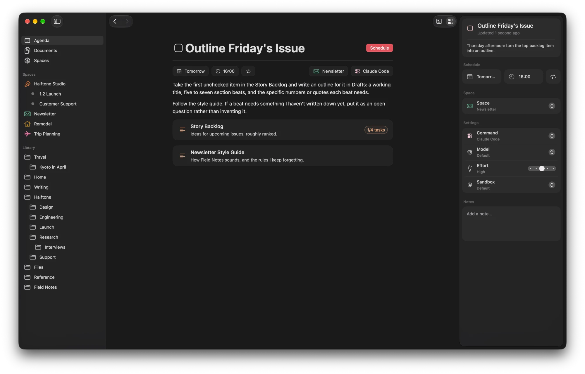
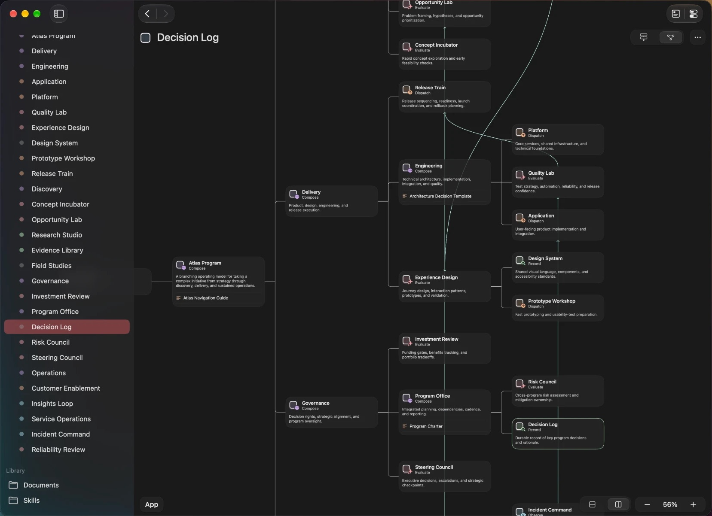

Context that keeps everything, and shows only what the work needs.
Scint is an agent workspace I designed and built on my own: a runtime, an MCP server, a process daemon and a native macOS app. This case study covers its central problem, context. It keeps a full record of agent work without ever compacting it, splits each request with TypeSafe's Jev decision model, and builds every run a view shaped by what was asked.
Role
Sole designer and engineer, from runtime to interface
Built
Runtime, MCP server, XPC process daemon, native app, design system
Models
TypeSafe Jev for routing; Claude Code and Codex for agent runs
Scale
About 17,000 lines of Swift across five modules

A session is the wrong unit of context.
Most agent harnesses keep context in a session. A loop hands the model its message history, the model calls tools, and the history grows. Models get worse at using a long context well before the window is full, and the standard fix is compaction: summarize what came before and carry on. Summaries drop the subgoal that was in progress and the constraint that mattered. When the session ends, whatever wasn't written somewhere else is gone, and a sub-agent's work comes back as a paragraph.
I wanted the opposite trade. Keep every step an agent takes. Never summarize it. Then give each request a view small enough to reason over, chosen for the kind of work being asked for.
Keep the whole record
Every request, reply, tool call, reasoning step and error is stored and stays reachable. Nothing is compacted.
Bound every request
The view a run receives has a fixed budget per kind of work, so the last request of the day starts as light as the first.
Decide cheaply
Choosing the kind of work is a classification, not an agent turn. It should cost one fast call.
Read current material, not copies
Documents are the work as it stands. Requests should point at them and read them live, not paste stale text into a prompt.
One path for every request
A typed message, a scheduled task, another agent and an outside app should all arrive and be recorded the same way.
Own the record, not the model
Continuity belongs to the system, so providers can change between two requests without losing anything.
Record, classify, map, run, record.
Every space in Scint (a project, a folder of work, a long-running job) has one transcript and a queue. A request moves through the same five steps no matter where it came from.
- SubmitThe request is a document, placed in the space's queue.
- ClassifyJev reads it with the last few messages and picks an intent.
- MapCode builds the view for that intent from the record and the space.
- RunThe intent's method supplies a command. A model run starts fresh on the view.
- RecordOutput is parsed into Scint's own entries in that intent's transcript.
- The next request is classified and mapped against a record that now includes this run.
One transcript per space, nested by intent.
A space's transcript is the source of truth. Requests and replies go into it, along with lifecycle signals for every run. Inside it, each intent keeps its own nested transcript: Compose, Process, Evaluate, Observe and Search. That is where each kind of work's invocations, tool calls, reasoning, output and errors build up.
A person reads one short conversation per space and never manages sessions or threads. The full working detail is one step away, attached to the conversation at the point where each run happened.
Transcript
structureView this space
structureCreate Atlas Program: 28 spaces in one call
structureView Delivery, Discovery, Governance, Operations
contentCreate 5 documents, among them Program Charter, Architecture Decision Template and Operational Readiness Checklist
structureBridge Evidence Library, Quality Lab, Release Train, Design System, Steering Council, Insights Loop, Incident Command, Risk Council
structureView every space again to verify it
Plus the agent's reasoning between calls.
One entry: the reply. Jev moved the space to Process, and a different provider answered than the one that built the project.
The runs that built this project spent about 18,000 tokens across 61 tool calls. The conversation they left behind is about 420. Nothing was summarized away: every call is still in the Compose transcript, whole, and reachable. The space's inspector shows the same split live, with an estimate of stored context, each intent's share and run count, tool calls and total run time.
A decision model splits the work.
Before any agent runs, Scint asks one question: which intent should handle this request? It sends the question to Jev, TypeSafe's decision model, which answers with a typed choice, a confidence and a probability for each option instead of prose. That one call decides which transcript the run works in, what the agent will see, and which command runs.
The state Jev decides on is structured data, not a prompt: the request, the last six messages of the conversation, and a routing guide that describes each intent by the work it does, what it sees, the requests it takes, what it is not, and examples. Jev can also choose none, for greetings, acknowledgements and small follow-ups, and the space keeps its current intent. A request can name its intent outright and skip the call. If the call fails, the space keeps its intent and the request runs anyway.
The kind of request each intent takes
Code, not a model, builds what the agent sees.
Once the intent is chosen, Scint builds the starting view entirely in code. No second model pass summarizes or curates memory. Each intent has its own mapping over the most recent context: which structure is visible, which commands and documents are listed, and how much of which transcripts is excerpted.
What an intent records and what it reads are separate choices. Observe keeps its own transcript, but its view draws on the shared conversation and Process's history. Compose sees broadly and shallowly; Process sees narrowly and deeply.
Listed in the request
History excerpted, in characters
- BaseWhat Scint is, how its links and tools work, and how to reply: one final message, no narration.
- IntentThe chosen intent's own instructions.
- SpaceCards for the structure this intent can see, each with a name, a live
scint://link and a description. - InterfacesThe commands, and for Compose the interfaces, the agent can inspect or invoke through MCP.
- ContentDocuments and files by name, link and description. Their contents are read through MCP, as they are at that moment.
- ThreadExcerpts in a fixed order: the shared conversation, then the Compose, Evaluate, Process and Search transcripts, each within its intent's budget.
- RequestThe message itself, rendered from its document.
The record is what happened. Documents are where the work stands.
The transcript and the documents give two different kinds of continuity. The transcript records experience; documents hold the current state of the work. A request combines both. Update a style guide, and the next request reads the new version while the conversation that led to the change stays exactly as it was.
Every object in the runtime has one identity, and every relation is a reference to it. A document can sit in any number of folders and spaces and still be one document. It can embed other documents, files, links and commands by reference. When an agent edits a document someone has open, they watch it change, because there is no copy to sync. The architecture notes show this in action.


Every request is a document.
The message box at the bottom of a space is the same block editor used for documents. Its body carries instructions and references; its header carries execution settings such as the command and its model and effort. When a message is sent, the space's queue prepares the next draft and carries those settings forward.
Tasks are documents too. They live together in Agenda, and each has a schedule, the space it works in, and the command that runs it. A task does one thing: when it comes due, it dispatches to its space as a request, exactly like a message typed there. That space classifies and maps it against its own record and documents, and the run joins its transcript.

A message typed into a space, a task that comes due, one space briefing another, an MCP compose call and a scint:// callback URL from another app all arrive the same way: as a document submitted to a space. Every run is queued, recorded and handled by the same rules, whoever asked.
Delegation creates a place, not a summary.
Hand a job to a sub-agent in most tools and a summary comes back; the context it spent is gone. In Scint, a Compose agent creates spaces (a whole tree in one call), briefs a child space and starts it. The child keeps its own documents and its own record. A person can open it, read what happened, and continue the conversation the coordinator began.
Containment and bridges are two structures over the same spaces. Containment says where a space belongs; a bridge says which spaces work together, and it carries documents and commands of its own.

Intent, command and model are separate choices.
An intent picks a method on the space's interface, and the method supplies the command; a request can also name its own command. A model is just an argument to a command that uses one. Calling a model is one thing commands do: Observe's default command is the scheduler, not a model.
A command is an executable with a typed argument list. From that one definition, Scint derives the command line, the MCP tool schema for the space's agent, and the controls in the inspector. That holds for the provider commands and for any command added later. Claude Code's and Codex's streaming output is translated into the same set of entries (output, reasoning, tool calls, errors), so the record belongs to Scint rather than to whichever model wrote it, and providers can change between two requests.
// Abbreviated from the seeded Claude Code command Command.new( name: "Claude Code", artifact: artifacts.claude, args: [ .command("--print"), .command("--output-format"), .command("stream-json"), .command("--mcp-config"), .command(claudeConfig), .options("--model", ["claude-fable-5-1", "claude-opus-5", …]), .reference("--add-dir=", .typeId(Artifact.self)), .range("--effort", ["low", "medium", "high", "xhigh", "max"]), .options("--permission-mode", ["default", "acceptEdits", …], value: "default"), .text("input", required: true) ] )
# Values come from the request document's header; input is the mapped view claude --print --output-format stream-json --verbose \ --mcp-config '{"mcpServers":{"scint":{"type":"http", … "Bearer ${SCINT_CONTEXT}"}}}' \ --strict-mcp-config --model claude-opus-5 --effort high \ --permission-mode default "<the mapped request>"
{
"type": "object",
"properties": {
"--model": { "type": "string", "enum": ["claude-fable-5-1", "claude-opus-5", …] },
"--add-dir=": { "type": "string", "format": "uri", "description": "A scint:// link." },
"--effort": { "type": "string", "enum": ["low", "medium", "high", "xhigh", "max"] },
"--permission-mode": { "type": "string", "enum": ["default", "acceptEdits", …] },
"input": { "type": "string" }
},
"required": ["input"]
}
scint:// links.The systems work underneath.
MCP server
An HTTP MCP server on localhost with built-in tools for structure, content, compose and search, plus a tool for every command attached to the calling space. An agent authenticates with its space's context id, so its command tools are its own space's.
Process daemon
scintd, an XPC service registered through SMAppService, runs commands with the user's login-shell environment, streams output, and supervises long-running services with never, on-failure and always restart policies.
Identity and search
A reference graph where every object carries five identifiers (object, type, descriptor, context and storage), a catalog that names and searches everything, and scint:// links that leave the app and come back as the same object.
Persistence and callbacks
Plain JSON under ~/.local/share/scint with batched, atomic writes. Every built-in tool is also an x-callback URL, parsed against the same schema MCP uses, so Shortcuts and other apps can drive the same operations.
What the design costs, and why it's worth it.
- Storage instead of summaries. The record grows without bound. Disk is cheap and the view is bounded, so the cost lands where it hurts least, and nothing has to be guessed away.
- Excerpts can miss older detail. Anything outside a view is still one tool call away: the agent can read any transcript or document through MCP by its link.
- A decision on every request. Routing adds one network call before each run. It is a fast, typed classification rather than an agent turn, and a failure leaves the space's intent in place, so the request still runs.
- No memory on the provider side. Codex runs ephemeral and every provider run starts fresh. Continuity is Scint's job, which is exactly what makes switching providers free.
I build the parts of agent systems that decide what a model sees.
- Context engineering: keeping a full record and mapping bounded, task-shaped views over it.
- Decision models in production: TypeSafe Jev routing every request, with structured state and criteria.
- MCP and tooling: a server, built-in tools, and tool schemas derived from typed command definitions.
- Orchestration: agents in many spaces, delegating through one queued path.
- Systems and product: a process daemon, persistence and identity layers, and the interface on top of them.
Scint is in development and designed and built by one person, Tim Kaechle. I'm available for work on LLM and agent systems: context engineering, decision-model routing, MCP integrations and full-stack products with agents at their core.